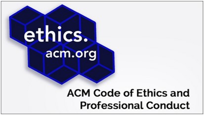
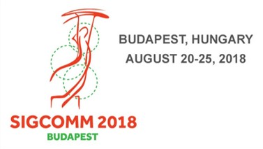
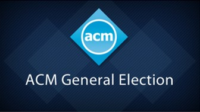
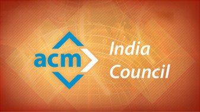
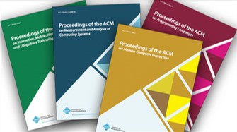
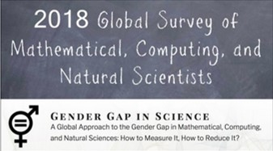
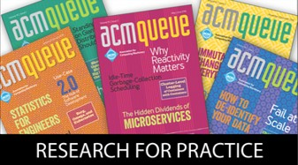
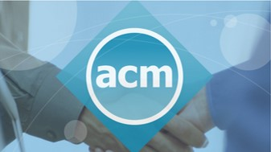

|  |
ETHICS IN COMPUTINGACM Updates Code of EthicsACM has updated its Code of Ethics and Professional Conduct. The revised Code of Ethics addresses |
|
PEOPLE OF ACM INTERVIEWMeet Jim HendlerJames A. “Jim” Hendler is the Director of the |
KDD 2018, August 19 to 23,
|

SIGCOMM 2018, August 20 to 25,
|
ACM NEWSMAKERSACM Names Vicki L. Hanson
|

ACM ELECTIONS2018 ACM General ElectionACM's newly-elected officers: For the term 1 July 2018 - 30 June 2020 President Vice President Secretary/Treasurer For the term 1 July 2018 - 30 June 2022 Members at Large |

ACM ELECTIONSACM India Council ElectionNewly-Elected Officers for the term 1 July 2018 - 30 June 2020: Members-at Large for the term 1 July 2018 - 30 June 2022: Supratik Chakraborty, IIT Bombay |
|

Proceedings of the ACM SeriesProceedings of the ACM (PACM) is a journal series that launched in 2017. The series was created in recognition of the fact that conference-centric publishing disadvantages the CS community with respect to other scientific disciplines when competing with researchers from other disciplines for top science awards and career progression, and the fact that top ACM conferences have demonstrated high quality and high impact on the field. See PACMs on Programming Languages, Interactive, Mobile, Wearable and Ubiquitous Technologies, Measurement and Analysis of Computing Systems, and HCI. |
PEOPLE OF ACM INTERVIEWMeet Nuria OliverNuria Oliver is the first Director of Data Science Research at Vodafone, a global telecommunications conglomerate. An ACM Fellow, she is serving as a General Co-Chair of Mobile HCI 2018. "As telecommunications providers, we need to rely on sophisticated machine learning algorithms … to be able to personalize services; understand, anticipate and respond to customer needs; optimize our networks; create new data-driven services; and help make better decisions that have positive social impact. I am particularly passionate about this last topic." |

Participate in a Global Survey of
|
CACM REPORTSCACM August 2018 - Multiparty Privacy in Social MediaOnline social networks are not only huge in scale, they are predicted to keep growing in the coming years both in the number of users and in the amount of data users upload and share. There have been many efforts devoted to study privacy in social media and how to protect users' personal information since the very early days of social media. However, most of these efforts have focused on privacy from an individual point of view. Privacy is not just about what you say or disclose about yourself. It is also about what others say or disclose about you. In this video, Jose M. Such discusses "Multiparty Privacy in Social Media,” a Review Article in the August 2018 issue of Communications of the ACM. |

Prediction-Serving SystemsACM Queue’s “Research for Practice” is your number one resource for keeping up with emerging developments in the world of theory and applying them to the challenges you face on a daily basis. In this installment, Dan Crankshaw and Joey Gonzalez provide an overview of machine learning server systems. What happens when we wish to actually deploy a machine learning model to production, and how do we serve predictions with high accuracy and high computational efficiency? Dan and Joey’s curated research selection presents cutting-edge techniques spanning database-level integration, video processing, and prediction middleware. Given the explosion of interest in machine learning and its increasing impact on seemingly every application vertical, it's possible that systems such as these will become as commonplace as relational databases are today. |
|
|

GET INVOLVEDBecome an Ambassador for ACMEncourage your colleagues to join ACM, share the benefits of ACM and receive free gifts for participating. Your support of ACM is critical to our continuing efforts to advance computing as a science and a profession. |

PREMIER RESOURCEBringing You the World’s
|
CAREER RESOURCELifelong LearningACM offers lifelong learning resources including online books from Safari, online courses from Skillsoft, webinars on the hottest topics in computing and IT, and more. |
ACM Expresses Concern About New Executive Order Suspending VisasThe Association for Computing Machinery, a global scientific and educational organization representing the computing community, expresses concern over US President Donald J. Trump’s Executive Order imposing suspension of visas to nationals of six countries. The open exchange of ideas and the freedom of thought and expression are central to the aims and goals of ACM. ACM supports the statute of International Council for Science in that the free and responsible practice of science is fundamental to scientific advancement and human and environmental well-being. Such practice, in all its aspects, requires freedom of movement, association, expression and communication for scientists. All individuals are entitled to participate in any ACM activity. |
||